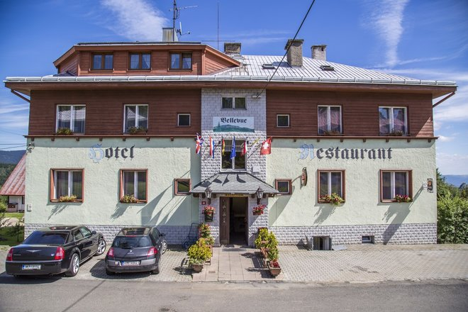
12 pokojů (2–3 lůžka s možností přistýlky), sprcha a WC, TV se satelitem a telefon. Restaurace pro 55 hostů a vyhlídková terasa s panoramatem Krušných hor.
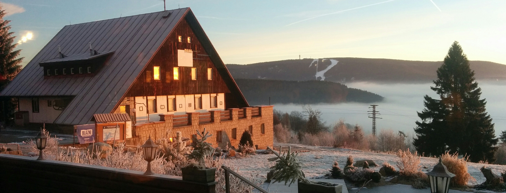
Vítejte v horském středisku
Místo, kde stojí za to zůstat. Pokoje s výhledem na Klínovec, kuchyně, kvůli které sejdete dolů, a rodina, která se o vás stará už přes třicet let.
Pokoje & objekty

12 pokojů (2–3 lůžka s možností přistýlky), sprcha a WC, TV se satelitem a telefon. Restaurace pro 55 hostů a vyhlídková terasa s panoramatem Krušných hor.
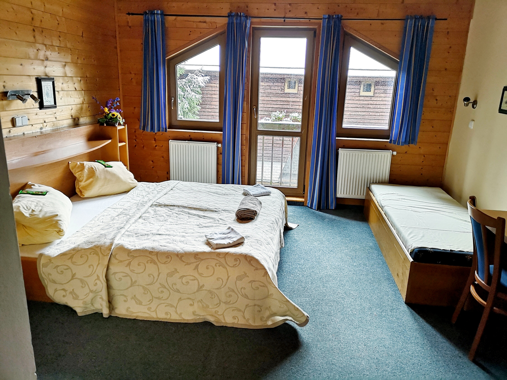
Novostavba z roku 2002 — 7 pokojů (3–4 lůžka), všechny s balkonem, vlastním sociálním zařízením a TV. Restaurace s terasou a možnost venkovního grilování od 20 osob.
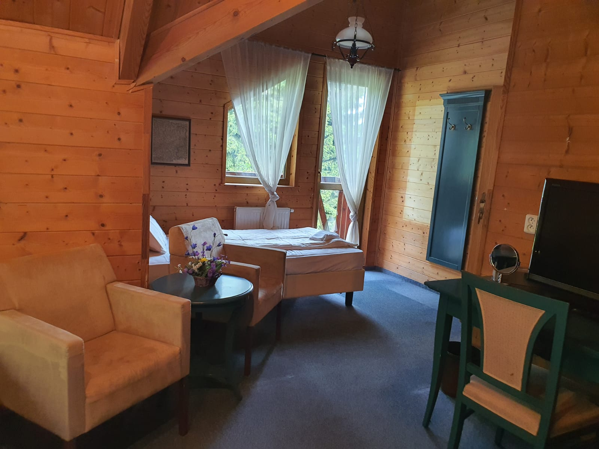
Kompletně zařízená kuchyně, společenská místnost pro 60 osob, letní terasa pro 40. Každý pokoj má vlastní sprchu a WC. Parkoviště, lyžárna a úschovna kol přímo u objektu.
K dispozici jsou také depandance Bellevue a Petr. Vlídné prostředí 2 km nad Jáchymovem, 6 km od Božího Daru a 25 km od Karlových Varů. Děti do 3 let zdarma, děti 3–12 let sleva 30 %. Polopenze +200 Kč/den.
Služby střediska
Tradiční kuchyně od snídaně po večeři. V létě terasa s výhledem na Klínovec, v zimě posezení u otevřeného krbu.
Vlastní parkoviště přímo u hotelu, lyžárna a úschovna horských kol. Ideální zázemí pro lyžaře i cykloturisty.
Vysoká kapacita lůžek, strava včetně diet, sportoviště a spolupráce se Skiareálem Plešivec včetně lyžařských kurzů.
Obřad na zahradě Bellevue, hostina v Petru nebo na chatě. Domácí mazlíčci vítáni — lesní stezky a klidná příroda na dosah.
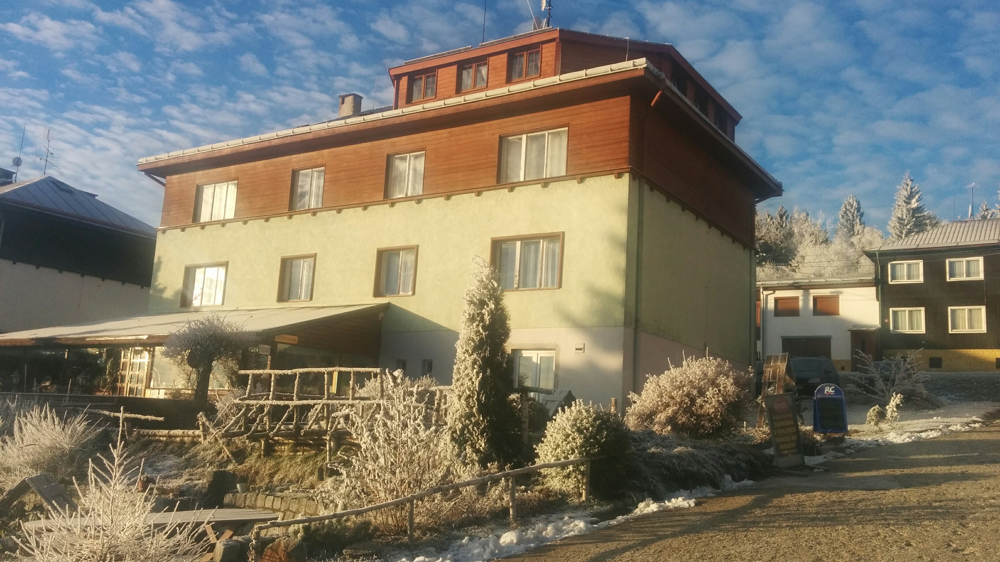
Náš příběh
Již více než 30 let klademe velký důraz na spokojenost a pohodu našich hostů. Jsme hrdí na to, že se naše rodina s láskou, radostí a vřelostí stará o PAM již generace.
Od roku 1991 se náš malý rodinný penzion rozrostl v horské středisko s hotely Bellevue a Petr, depandancemi a horskou chatou — stále se stejným přístupem.
Těšíme se, až vás jako hosta přivítáme v Bergzentru PAM.
Rodina Jedličkova a tým
Napsat námRecenze hostů
„Chtěla bych moc poděkovat za krásný víkend. Hotel Bellevue je příjemný a veškerý personál jsou úžasní lidé, skvělá kuchyně a krásné prostředí.“Alena P. Travelking · Hotel Bellevue
„Fabulous location for hiking and magnificent view. Spacious rooms and above all, fabulous food. Well done and a big thank you to the chef!“Host z Česka Booking.com
„Restaurace s výhledem na Klínovec, profesionální obsluha, bohaté snídaně a chutné večeře. Paní Martina je velmi ochotná — určitě se vrátíme.“Manželé Znamenáčkovi Travelking · opakovaný pobyt
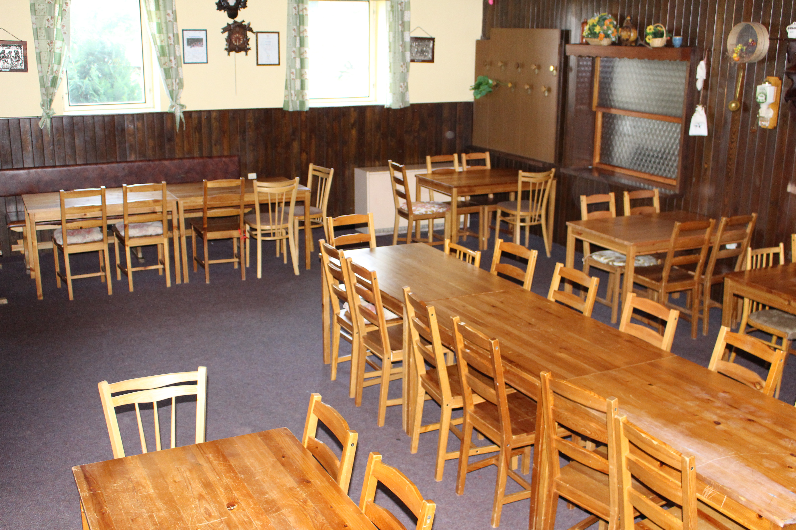
Restaurace
Spěte klidně, probuďte se svěží a těšte se na gurmánskou snídani. Od vydatného rána přes oběd až po večeři — tradiční kuchyně ve stylovém prostředí s opravdovou vřelostí. V létě terasa s výhledem na masiv Klínovce, v chladnějších měsících krb s otevřeným ohněm.
Jídelní lístek (PDF)Tipy z okolí
Výlety
Šest kilometrů k hranici, výhledy z nejvyšší hory Krušných hor a rašeliniště Boží Dar na dosah.
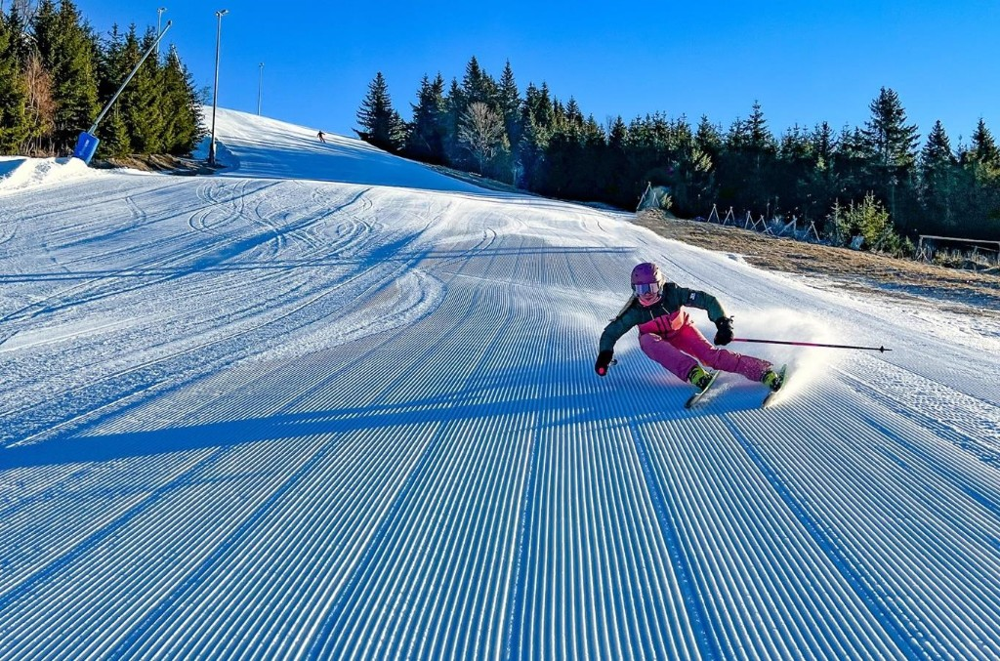
Zima
Spolupráce se Skiareálem Plešivec — skibusy, úschovna lyží a podmínky vhodné i pro školní skupiny.
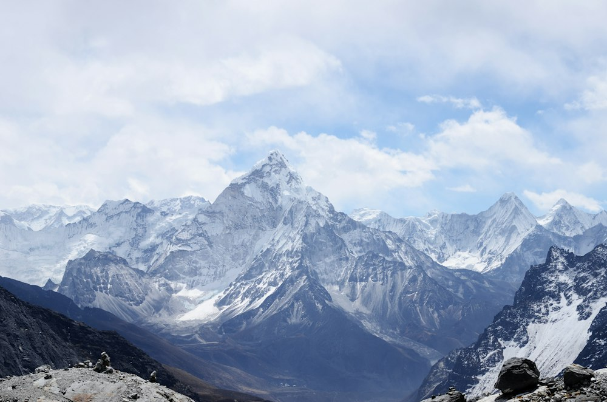
Léto
Naučná stezka Jáchymovské peklo, Ježíškova cesta pro děti a Karlovy Vary jen 25 km daleko.
Galerie
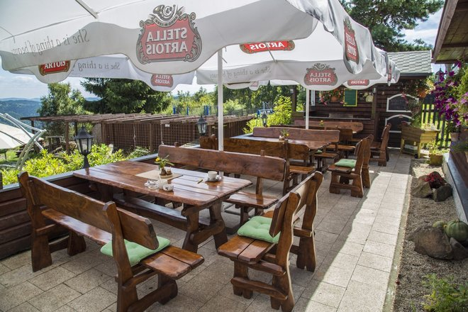
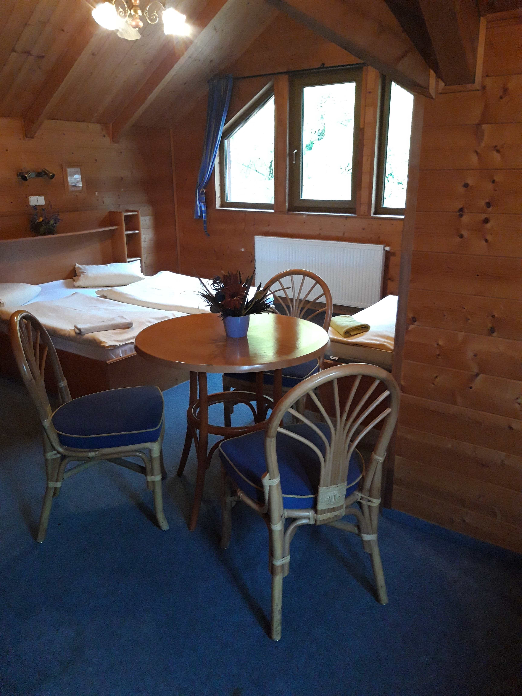
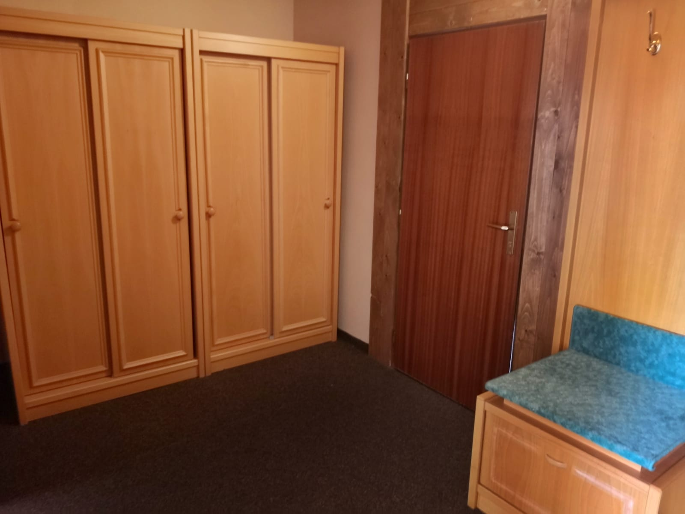
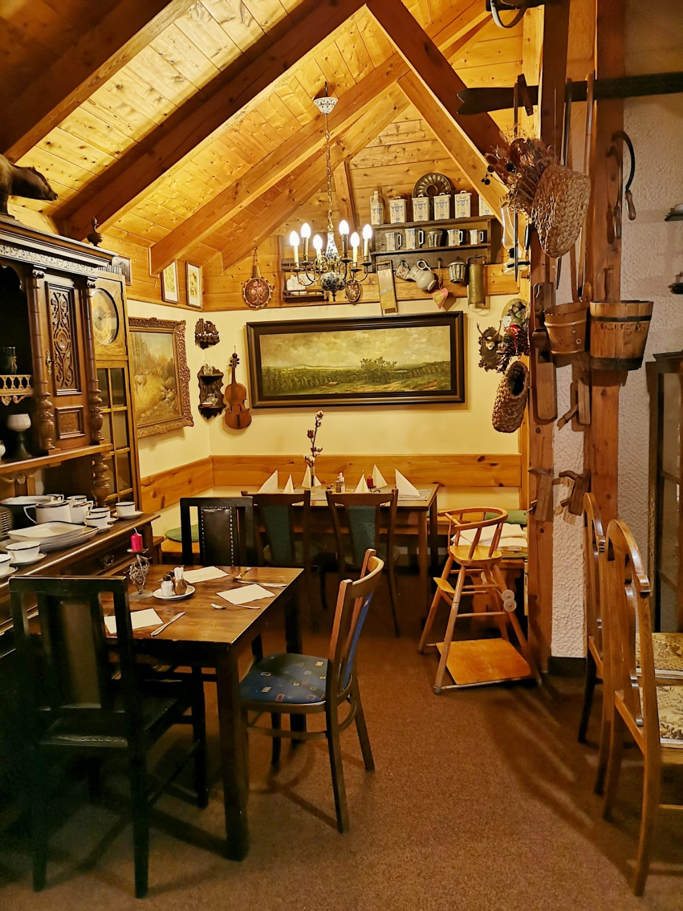
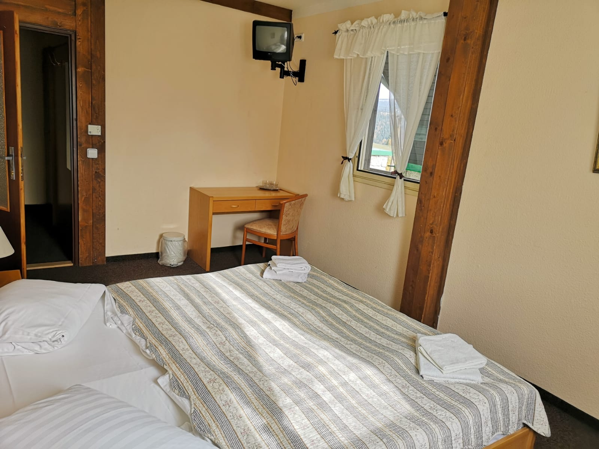
Kontakt
Rádi připravíme nabídku na míru — rodinný víkend, školní pobyt, svatbu i firemní akci.